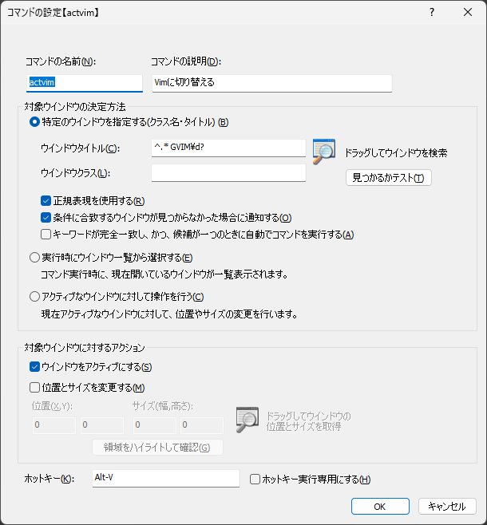

ウインドウ操作コマンド
指定した条件に基づきウインドウを決定し、操作を適用するためのコマンドです。
このコマンドは以下のような用途で使うことができます。
特定のウインドウに切り替える: 決まったアプリやウインドウを呼び出します。
一覧から選んで切り替える: 実行時に表示されているウインドウの一覧から選択します。
ウインドウを所定の位置に配置する : 特定の領域に当てはめる形でウインドウを配置します。
メリット
Windows標準の Alt + Tab や Win + Tab による切り替えには以下の課題があります。
開いているウインドウの数や順序によって、目的のウインドウに辿り着くまでの操作回数が変わる。
ウインドウが多いと探す手間がかかる。
このコマンドを使えば、ウインドウがいくつ開いていても 常に同じ操作（1回のホットキーや特定のキーワード） で、目的のウインドウを瞬時に呼び出すことができます。
設定画面

基本設定
コマンドの名前
入力画面でこのコマンドを呼び出すためのキーワードを入力します。コマンドの説明
入力画面のコメント欄に表示される説明文です。
対象ウインドウの決定方法
操作対象とするウインドウをどのように特定するかを選択します。
特定のウインドウを指定する(クラス名・タイトル)
特定のアプリや特定のタイトルのウインドウを操作したい場合に使用します。 右側にあるウインドウ検索アイコンを目的のウインドウへドラッグ＆ドロップすると、クラス名とタイトルが自動入力されます。
ウインドウタイトル
検索対象とするウインドウのタイトルを指定します。空欄の場合は「クラス名」のみで検索します。ウインドウクラス
検索対象とするウインドウクラスを指定します。空欄の場合は「タイトル」のみで検索します。
※「タイトル」か「クラス名」のどちらか一方は入力が必要です。正規表現を使用する
チェックを入れると、タイトルやクラス名を正規表現として扱います。チェックしない場合は完全一致で検索します。利用できる正規表現の制限については正規表現の制限を参照してください。条件に合致するウインドウが見つからなかった場合に通知する
チェックを入れると、タイトルやクラス名に合致するウインドウが見つからなかった場合にメッセージ通知します。キーワードが完全一致し、かつ、候補が一つのときに自動でコマンドを実行する
チェックを入れると、キーワードが完全一致し、かつ、他の候補がない時点でコマンドを実行します。(Enterキーを押さなくても確定します)見つかるかテスト
設定した条件でウインドウが見つかるか確認できます。見つかった場合、そのウインドウのタスクバーアイコンが点滅します。
実行時にウインドウ一覧から選択する
コマンド実行時に、現在開いているウインドウの一覧を候補として表示し、その中から手動で選択します。
アクティブなウインドウに対して操作を行う
コマンド実行時点でアクティブなウインドウに対して、後述の操作を適用します。
対象ウインドウに対するアクション
特定したウインドウに対して行う操作を設定します。 右側のウインドウ検索アイコンをドラッグ＆ドロップすることで、現在の位置とサイズを取得できます。
ウインドウをアクティブにする
対象のウインドウを最前面に表示します。位置とサイズを変更する
チェックを入れると、指定した座標(X, Y)とサイズ(幅, 高さ)に変更します。領域をハイライトして確認
設定した位置とサイズを画面上に約1秒間ハイライト表示して確認できます。
呼び出し設定
ホットキー
入力画面を開かずに直接コマンドを実行するためのキーバインド（例：Alt + V）を設定できます。ホットキー実行専用にする
チェックを入れると、キーワード入力時の候補一覧には表示されなくなり、ホットキー押下時のみ実行されるようになります。
実行時の動作
検索候補として表示されている際の操作は以下の通りです。
キー操作 |
動作 |
|---|---|
|
対象のウインドウに切り替えます。 |
|
対象のウインドウに切り替え、同時に最大化します。 |